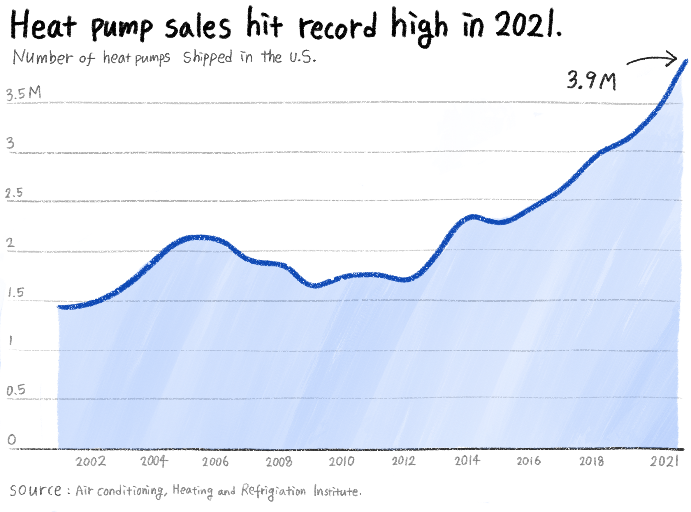
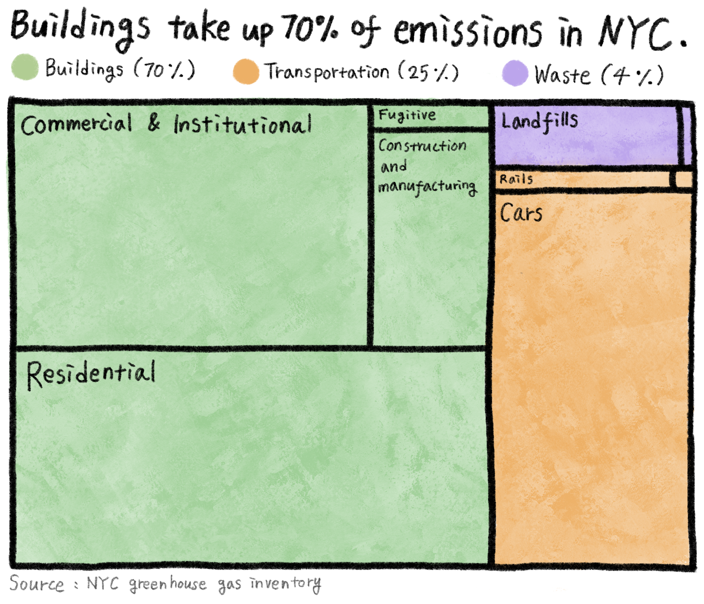

Heat pumps, unassuming home appliances that can both heat and cool homes, have quickly become the talk of the town in the world of clean energy.
Scholars and advocates alike sing their praises as the future of sustainable heating, while fossil fuel companies launch campaigns to sway people away from them. As the momentum of heat pump adoption grows in various states, New York State lags far behind despite the potential benefits of reduced emissions.
What are heat pumps, anyway?
Simply put, a heat pump is an air conditioner that can double as a heater during the winter months. Heat pumps are an exciting technology for clean energy enthusiasts, as they offer an efficient and eco-friendly alternative to fossil fuel-based heating systems. Unlike traditional heaters, which burn fossil fuels to generate heat, heat pumps use refrigerants to move heat energy in and out of a building. This means they can be used for both cooling and heating, making them a versatile option for year-round climate control.
During the summertime, heat pumps gather heat from the inside and push it outdoors, making houses cool and dehumidified.

During winter, heat pumps operate in reverse, extracting heat from the cold outdoor air and bringing it inside to warm the building. This may seem counterintuitive, as how can a heat pump produce heat when the outside temperature is as low as 10 degrees? The answer lies in the fact that heat is energy that can be transferred, and even in cold weather, there is still enough energy in the air to heat the refrigerant, which is even colder.

Why is it good for the climate?
This seemingly humdrum home appliance has gained a surprising amount of attention over the past several years thanks to its remarkable efficiency and promising potential to address climate concerns.
For much of the world, heating homes is a carbon-intensive process. According to the 2022 report by International Energy Agency (IEA), heating in buildings is responsible for 10 percent of global emissions today. It estimated that “heat pumps have the potential to reduce global carbon dioxide (CO2) emissions by at least 500 million tonnes in 2030—equal to the annual CO2 emissions of all cars in Europe today.”
The benefit of heat pumps goes beyond the heating season. The astonishing efficiency and cost-saving potential make them appealing to many consumers with cooling needs who are looking to replace their old air conditioners.
“Much like solar, batteries, and electric vehicles, heat pumps have gotten remarkably better in the last 10 years,” said Sam Calisch, the head of Special Projects at Rewiring America, a nonprofit organization advocating electrification in homes. “When we talk about replacing an air conditioner with a heat pump, usually what we mean is replacing an older air conditioner with a newer air conditioner that can also do heat.”

More consumers are hopping onto the heat pump trend. The IEA report showed that global heat pump market sales rose nearly 15 percent in 2021, double the average of the past decade. The rise was most pronounced in European Union countries, where rising natural gas prices pushed customers to explore new ways to heat their homes. The United States also saw record-high sales in 2021, with 3.9 million heat pumps shipped across the country.
What does this mean for New York?
Despite the increasing adoption on a national scale, individual states widely differ in the current state of heat pump expansion. According to the Residential Energy Consumption Survey by U.S. Energy Information Administration (EIA), around 3 percent of New York State residents use heat pumps for heating, significantly fewer than in other states with available data.
Noah Kaufman, an economist and research scholar at the Center on Global Energy Policy, explained that there are several reasons why heat pump installations in New York are lower compared to other states, mainly in the Southeastern part of the United States.
“Historically, there have been few strong policy incentives for heat pumps, so most installations have been driven by where heat pumps are most cost-effective,” he said in an email. He added that heat pumps are generally most cost-effective “in places with moderate climates with relatively low electricity prices and high natural gas prices,” which explains why states like Tennessee, South Carolina, and North Carolina saw big success in expanding heat pumps as a main heating system.
However, Kaufman also added that improvements to heat pump technologies can easily help bring up the adoption in colder climates. “They are becoming far more effective in cold weather,” he said.
Some heat pump models are designed to operate in temperatures as low as negative 10 degrees, as per the Northeast Energy Efficiency Partnerships' database. These "cold climate" heat pumps proved their effectiveness during a powerful arctic cold front in the Midwest and Northeast, where temperatures were well below negative 10 degrees.
Despite cold weather being a common concern, Maine's "Efficiency Maine" program has incentivized the adoption of heat pumps by offering up to $2,400 in rebates for homeowners who switch to the system. As a result, more and more residents have been embracing heat pumps, proving that the hurdle to heat pump adoption is more regulatory than weather-driven.
The technological advancement for heat pumps is not slowing down anytime soon. In June 2022, the U.S. Department of Energy (DOE) announced that it was partnering with Lennox International to “develop a next-generation electric heat pump that can more effectively heat homes in northern climates.” As part of the DOE’s “Cold Climate Heat Pump Challenge,” Lennox is undergoing trials to deliver improved heat pump products by 2024.

The ongoing technological improvements, coupled with high greenhouse gas emissions from buildings, make New York a prime place for heat pump adoption. 70 percent of greenhouse gas emissions in New York City are from buildings, making the decarbonization of buildings critical for the city’s efforts to go green.
However, New York City’s high renter population and unique heating regulations make it less than ideal for residents to switch to heat pumps. Many rental agreements in NYC include gas or steam heating bills as part of rent, but exclude electricity usage. This means that renters who choose to move to electrical heating may have to pay more.
“Situations where building owners decide on the heating equipment but apartment renters pay the energy bills are probably important barriers to heat pumps,” Kaufman said.
For example, the New York City Department of Housing Preservation and Development (HPD) has released a guideline for developers around installing heat pumps, to protect residents from paying higher utility bills. It requires HPD permission for any heat pump installations in affordable housing units, and does not allow resident-paid heat for buildings with a large share of vulnerable residents. For approved heat pump installations, owners must restructure rent so that it takes into account the potential increase in heating costs.
“It’s a huge challenge.” sad Calisch, acknowledging that the city cannot depend on a few climate-concerned renters for a city-wide change. “We need to make sure that the building owners know that there are options for whole-building heating that are electrified, which in many cases can also save them money.”
In August 2022, New York Governor Kathy Hochul and Mayr Aric Adams announced a $70 million investment to install 30,000 heat pumps in the city’s public housing facilities. The initiative is part of the state’s “Clean Heart for All” challenge, which aims to reduce greenhouse gas emissions from buildings by 40 percent before 2030.
Calisch said that speed is critical to maximizing the emissions reduction. “Every single new machine we install that runs on fossil fuels is locking in that consumption for the next ten to 20 years,” he said. “What we absolutely cannot do is wait to electrify.”